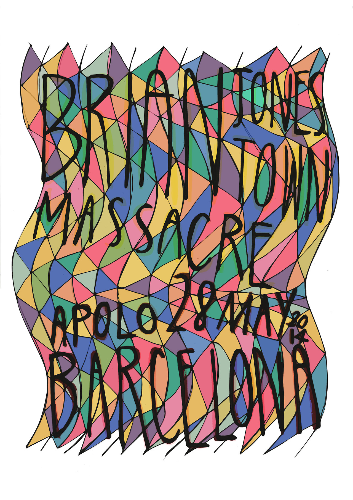
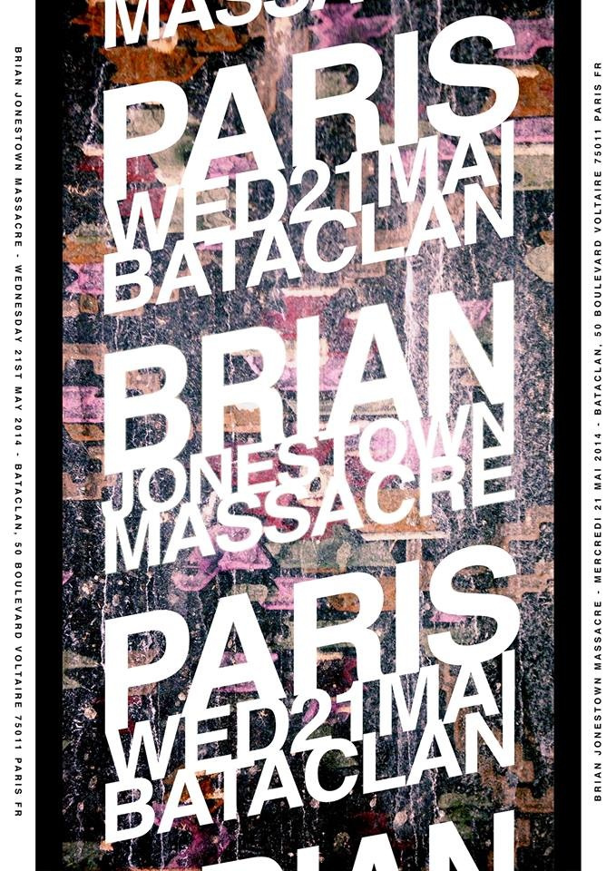
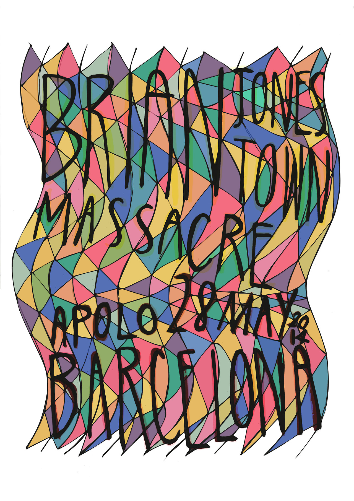
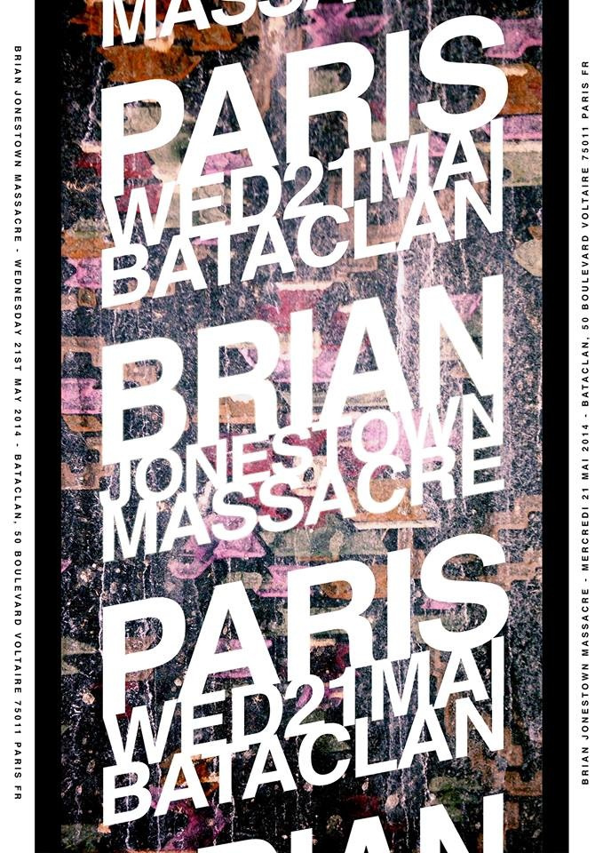
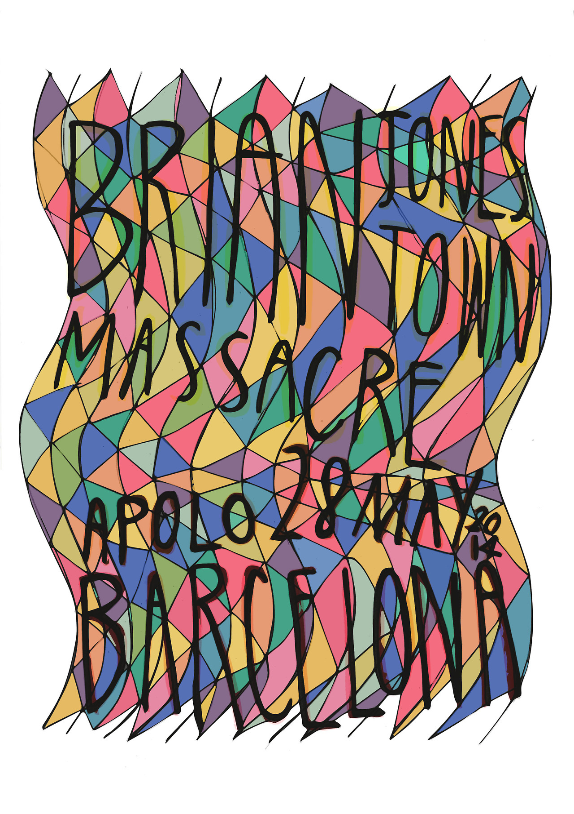
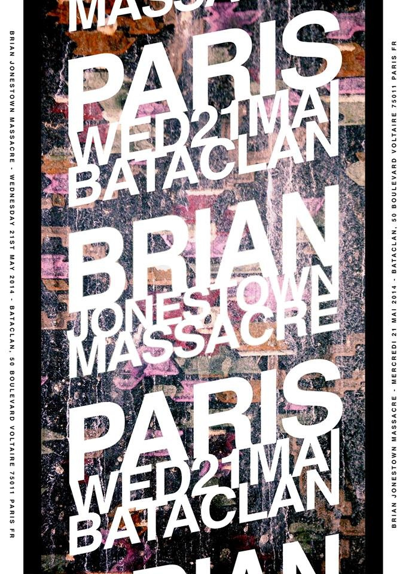

Brian Jonestown MassacreVarious tour posters |
Format | Poster | |
|---|---|---|---|
| Discipline | Design, Illustration | ||
| By | LUKEABC | Date | 2014 |


A series of gig posters designed for Brian Jonestown Massacre's 2014 European tour. Each poster takes a completely different visual approach to reflect the character of the city it was made for, while the hand-lettering ties the series together.
Melkweg, June 2014. A dancing figure built from a repeating square pattern, black and white.
Babel, June 2014. Architectural perspective in chalk on black, with the type built into the structure of the building.
Apolo, May 2014. Hand-lettered type set within a stained-glass composition of interlocking colour planes.
Bataclan, May 2014. Bold typographic poster with the text repeated and layered over a photographic brick texture.
| Role | Name |
|---|---|
| Design, Illustration | Lukeabc |